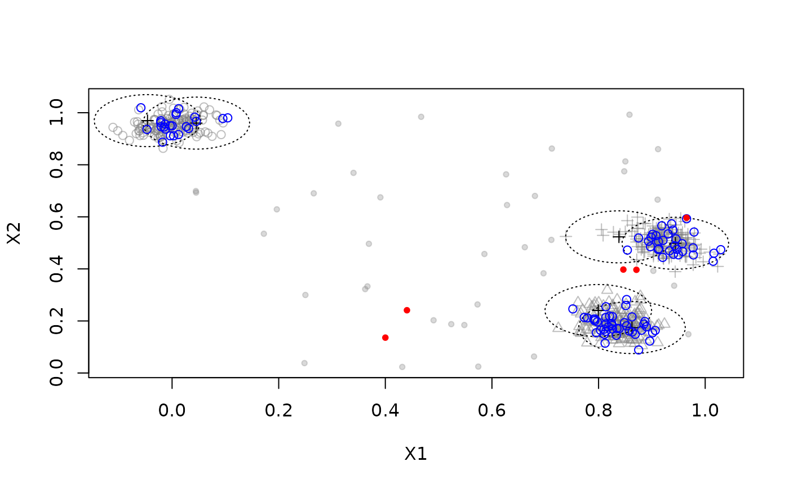

Deprecation Notice: use predict() for a more general interface to apply
a data stream model to new data. get_assignment() is deprecated.
Arguments
- dsc
The DSC object with the clusters for assignment.
- points
The points to be assigned as a data.frame.
- type
Use micro- or macro-clusters in DSC for assignment.
- method
assignment method
"model"uses the assignment method of the underlying algorithm (unassigned points returnNA). Not all algorithms implement this option."nn"performs nearest neighbor assignment using Euclidean distance."auto"uses the model assignment method. If this method is not implemented/available then method"nn"is used instead.
- ...
Additional arguments are passed on.
Value
A vector containing the assignment of each point. NA means
that a data point was not assigned to a cluster.
Details
Get the assignment of data points to clusters in a DSC using the
model's assignment rules or nearest neighbor assignment. The clustering is
not modified.
Each data point is assigned either using the original model's assignment rule or Euclidean nearest neighbor assignment. If the user specifies the model's assignment strategy, but is not available, then nearest neighbor assignment is used and a warning is produced.
Examples
stream <- DSD_Gaussians(k = 3, d = 2, noise = .05)
dbstream <- DSC_DBSTREAM(r = .1)
update(dbstream, stream, n = 100)
# find the assignment for the next 100 points to
# micro-clusters in dsc. This uses the model's assignment function
points <- get_points(stream, n = 100)
a <- predict(dbstream, points)
head(a)
#> .class
#> 1 2
#> 2 3
#> 3 4
#> 4 1
#> 5 1
#> 6 1
# show the MC assignment areas. Assigned points as blue circles and
# the unassigned points as red dots
plot(dbstream, stream, assignment = TRUE, type = "none")
points(points[!is.na(a[, ".class"]),], col = "blue")
points(points[is.na(a[, ".class"]),], col = "red", pch = 20)

# use nearest neighbor assignment instead
a <- predict(dbstream, points, method = "nn")
head(a)
#> .class
#> 1 2
#> 2 3
#> 3 4
#> 4 1
#> 5 1
#> 6 1